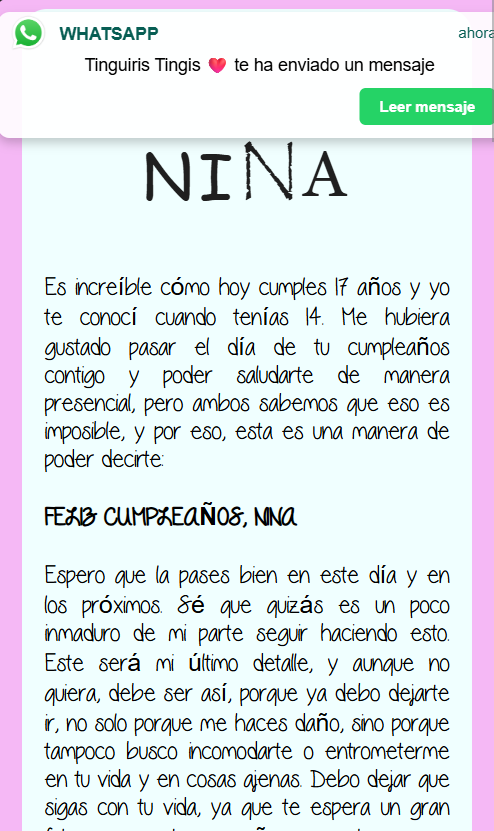

OBJETO RECUPERADO · CARTA COMPLETA
PARA VOLVER A SENTIR
Hay lugares
que viven
dentro de ti.
Algunos momentos no se van.
Se convierten en un lugar al que volver.
Una pequeña experiencia para una gran historia.
PARA VOLVER A SENTIR
Algunos momentos no se van.
Se convierten en un lugar al que volver.
Una pequeña experiencia para una gran historia.
Cinco puertas. Un mismo universo.
El lugar de los recuerdos
TÓMATE TU TIEMPO
Aquí construiremos uno de sus momentos juntos.
Este espacio todavía está esperando su historia.
De la mano, un poquito más.
La sala está vacía. A tu lado, Nina.
RECONSTRUYENDO UN RECUERDO
Preparando la casa…
RECUERDO 02 · EL DÍA DE LA FOCA
Camina hacia la casa y acércate a su puerta.
LO QUE SE QUEDA CONTIGO
RECUERDO 02 · OBJETO DESBLOQUEADO
Arrastra para girar · Rueda del mouse para acercar
RECUERDO 05
En medio de todo, una última luz.
Enter para guardar el celular y mirar al frente.

wave to earth · love.
Si no suena, pulsa reproducir.